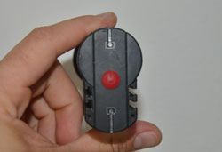
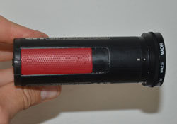

About Us
We are a professional headcam cinematography company that films television shows in POV. We are one of the few companies that offer these services in the world.
Companies we have filmed for:- ESPN
- NBC Sports
- Discovery Channel
- National Geographic
We decided because of our experience, that we would offer product reviews for the public on headcams. These are unbiased reviews, based purely on actual use! We have no corporate relationships with any particular headcam manufacturer.
Product Review
All product features are highlighted in red, the actually colors may vary.
Back View To turn the camera on, simply press the round power button (highlighted in red). To turn it off, hold the power button for 3 seconds. When you turn on the camera, there are two lasers in the front, which are used for alignment.
Top View This camera is so simple to use. All you need to do is push the slider forward and the camera begins recording.
Back to topContest
To win your very own Contour 1080HD, fill in the information below and press submit. A winner is announced every month.